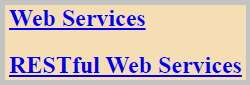
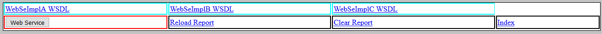
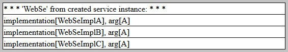
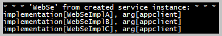
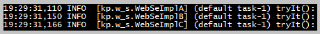
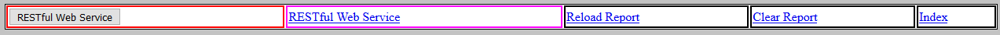
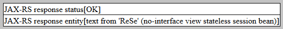
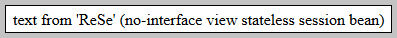

The flowchart with the WildFly application.
The flowchart with the WildFly application.
| Java API for XML-Based Web Services (JAX-WS) |
| Jakarta RESTful Web Services (JAX-RS) |
The sections of this project:
Java source code. Packages in modules 'common', 'ejb', 'web', 'appclient':

 module 'common' application sources:
kp
module 'common' application sources:
kp
module 'ejb' application sources:
kp
module 'web' application sources:
kp
module 'appclient' application sources:
kp.client
Action:

 1. With the batch file
"01 WildFly DeleteLog Startup.bat" start the WildFly server.
1. With the batch file
"01 WildFly DeleteLog Startup.bat" start the WildFly server.
2. With the batch file
"02 MVN clean install deploy WildFly.bat" build and deploy the application
 on the WildFly server.
on the WildFly server.
3. With the URL http://localhost:8080/Study14/
open in the web browser the 'home page'.
 1.1. The 'home page' file index.html:
HTML code,
HTML preview
1.1. The 'home page' file index.html:
HTML code,
HTML preview

The screenshot of the home page.
1.2. The link to the WildFly Application Server Administration Console.
Action:
1. Go to page http://localhost:8080/Study14/
2. Select the link 'Web Services'.
3. On this 'Web Services' page push the button "Web Service".

Screenshot from 'Web Services' page controls.
The JSF page on the screenshot 'w_s.xhtml' uses the bean 'WsManagedBean'.
2.1. On the 'Web Services' page there are three links to the WSDL files:
2.2. The button "Web Service" executes the method
'WsManagedBean::researchWebService'.
The web service endpoint 'WebSe' is implemented as a stateless session bean:
The web service implementation is created from the WSDL document in the method Tools::createWebSeImpl.
Screenshot from 'Web Service' action.
2.3. The WildFly application client
'ClientApplication'.
Action:
With batch file
"03 Run WildFly Application Client.bat" run the WildFly application client.

The client console log.

The server console log.
Back to the top of the page
Action:
1. Go to page http://localhost:8080/Study14/
2. Select the link 'RESTful Web Services'.
3. On this 'RESTful Web Services' page push the button "RESTful Web Service".
4. On this 'RESTful Web Services' page click the link
'RESTful Web Service'.

Screenshot from "RESTful Web Services" page controls.
The JSF page on the screenshot 'r_s.xhtml' uses the bean 'RsManagedBean'.
3.1. The button "RESTful Web Service" executes the method
'RsManagedBean::researchRestfulWebService'.
The stateless session bean 'ReSe'.
The GET method 'ReSe::getText'
for the service endpoint 'http://localhost:8080/Study14/rs/text/'.

Screenshot from 'RESTful Web Service' button action.

Screenshot from 'RESTful Web Service' link action.
Back to the top of the page


{kind=link}
{kind=link}
{kind=link}